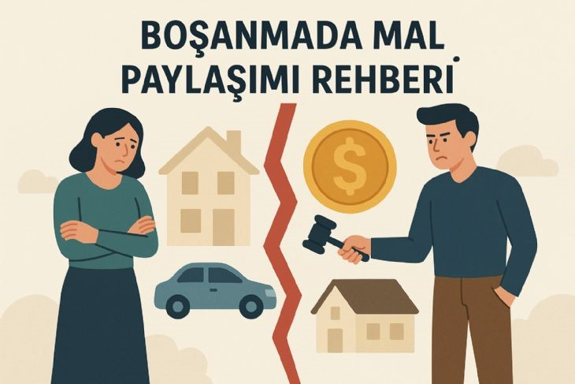

Boşanırsam Mallar Ne Olur? Uşak Boşanma Avukatı Açıklıyor

Boşanma halinde ev, araba, banka hesapları ve diğer mal varlıklarının nasıl paylaşılacağı Türk Medeni Kanunu kapsamında belirlenir. Evlilik sırasında edinilen mallar çoğu durumda eşler arasında yarı yarıya paylaşılır. Ancak kişisel mallar ve bazı özel durumlar mal paylaşımının farklı şekilde yapılmasına neden olabilir.
Boşanma davalarında en çok merak edilen konulardan biri evlilik sırasında edinilen malların nasıl paylaşılacağıdır.
Edinilmiş Mallar Nelerdir?
- Evlilik sırasında alınan ev ve gayrimenkuller
- Araçlar
- Maaş gelirleri
- Banka birikimleri
- Altın ve döviz yatırımları
- İş yeri gelirleri
Kişisel Mallar Paylaşılır mı?
- Evlilikten önce sahip olunan mallar
- Miras yoluyla elde edilen mallar
- Bağışlar
- Manevi tazminatlar
Tapuda Kimin Adına Olması Önemli mi?
Evlilik sırasında alınan mallar çoğu zaman edinilmiş mal kabul edilir.
Mal Paylaşımı Davası Nasıl Açılır?
- Katılma alacağı
- Katkı payı alacağı
- Değer artış payı
Uşak’ta Boşanma Avukatı Neden Önemlidir?
Mal paylaşımı davaları teknik hesaplamalar içerir.
Sonuç
Hak kaybı yaşamamak için bir Uşak boşanma avukatı ile süreci yürütmek önemlidir.
Uşak Boşanma Avukatı Desteği
Boşanma ve mal paylaşımı davaları hukuki ve teknik detaylar içerir. Hak kaybı yaşamamak için sürecin bir avukat ile yürütülmesi önemlidir.
Hukuki Danışmanlık Alın